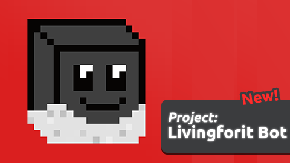

Welcome to Nordic Turbo!
Here is a link to our github.
To install this rep on your computer, click the "Git" button.
Here is a link to our github.
To install this rep on your computer, click the "Git" button.
